Setup before the first export
SC-79 · Munchly's workspace · two options for the Setup screen before the Data agent has mapped a stock export: how a live workspace starts, and how a reset of its journey leaves it. Every company, person and figure is fictional.
What the maintainer met (8 Oct), after starting Munchly's journey again:
- Setup said Mapped · confirm below and listed all eight fields as mapped, so “Confirm and start watching” looked ready.
- Pressing it answered: “That didn't go through. The Data agent has not mapped a stock export yet.” backend-api was right; the screen was not.
Setup now
The live screen claims a mapping before there is one, here with an export still uploading above it.
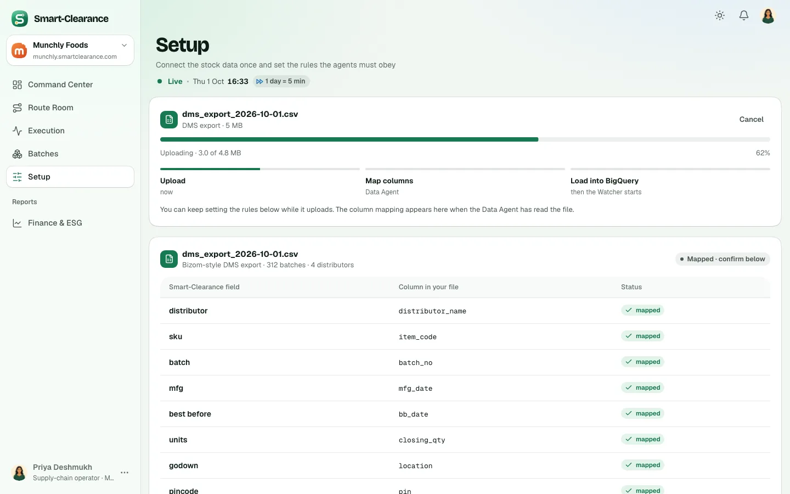
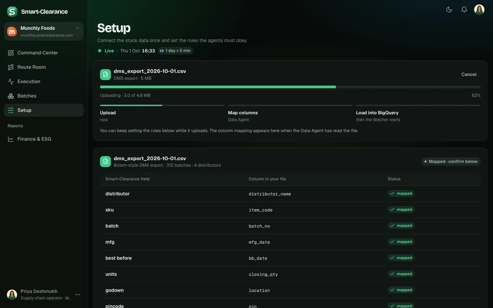
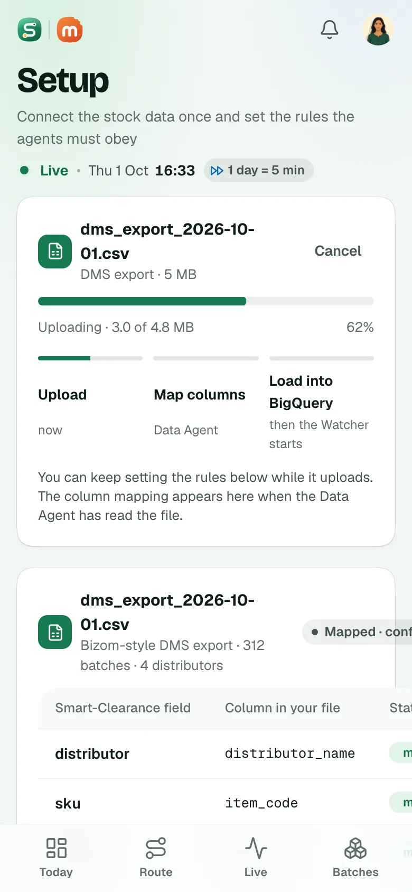
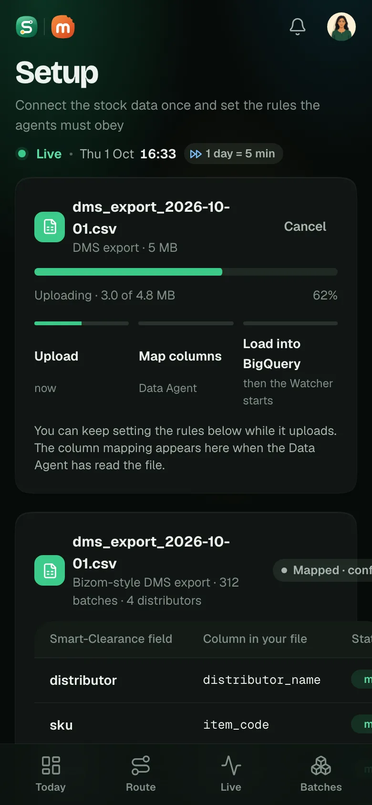
What both options share
Option A · Waiting in the export card
RecommendedThe DMS card says No stock export mapped yet, keeps the eight fields the Data agent looks for with waiting beside each, and makes Upload an export its primary button. Under it: when the Data agent's own run will map the day's export. Confirm is off, with its reason beside it.
- Where
- The DMS card at the top of Setup, and the Confirm row at its foot.
- Trade-offs
- The smallest change to the approved screen: the same card in every moment, so nothing moves when the mapping lands. The fields list says what the export needs to hold. The reason for waiting is at the foot of a long screen, beside the button it explains.
- What the build touches
- design3
screens/brand.jsx(Setup, fromsetup.mapped); the frontend'sSetup.sveltereading the live state's mapped count, which backend-api already sends; no contract change.
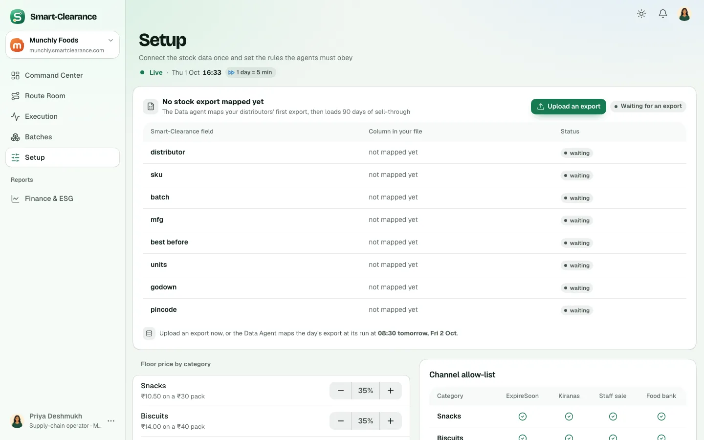
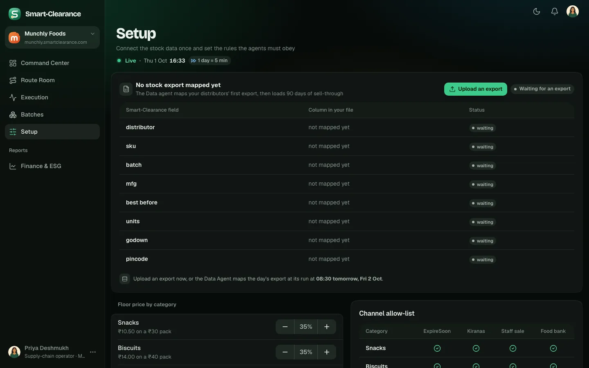
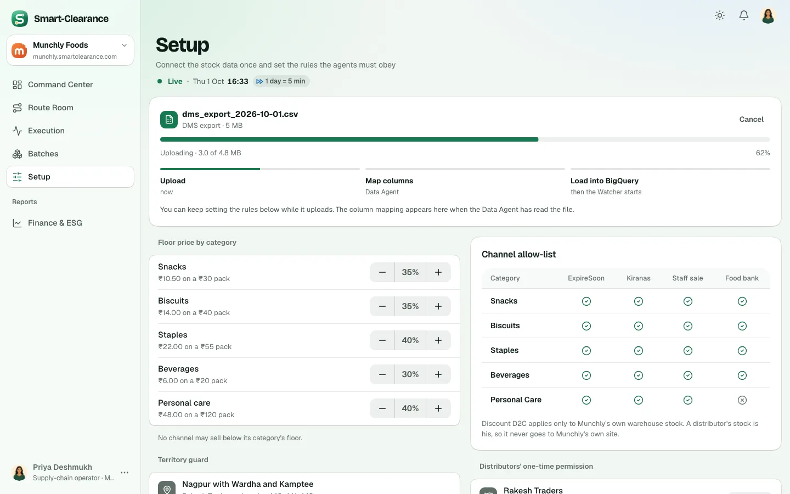
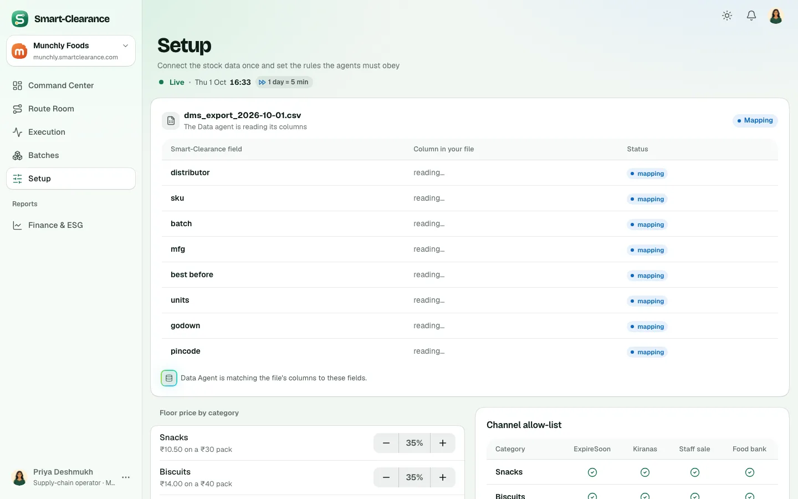
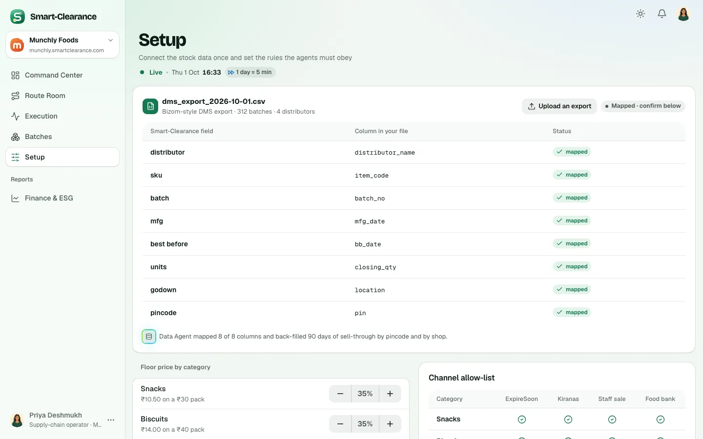
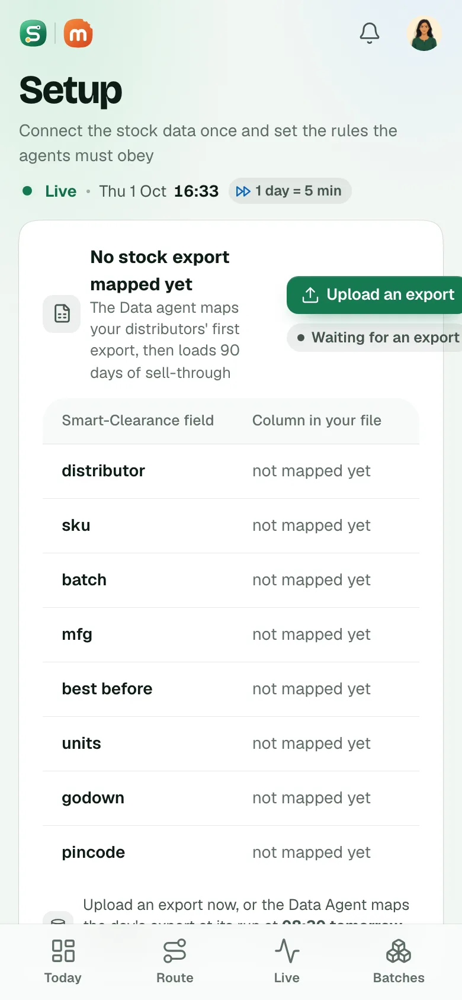
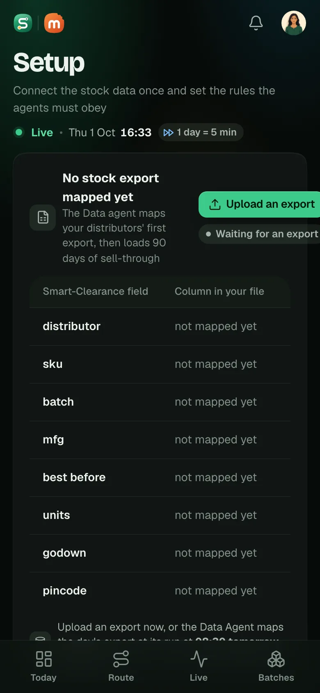
Option B · Three steps
Setup gains three steps across its top: Your stock export, The column mapping, Rules, then confirm. The first step is a place to drop the export, and Confirm docks at the foot of the screen with the step it is on.
- Where
- The top of Setup, and a bar docked at its foot (one line on phones).
- Trade-offs
- Guides a first setup most clearly, and the docked bar keeps the reason in view however far down the rules go. A bigger change to an approved screen for a moment that is rare; the docked bar covers part of the content as it scrolls, more so on phones.
- What the build touches
- As A, with the steps, the drop zone and a docked bar in
Setup.
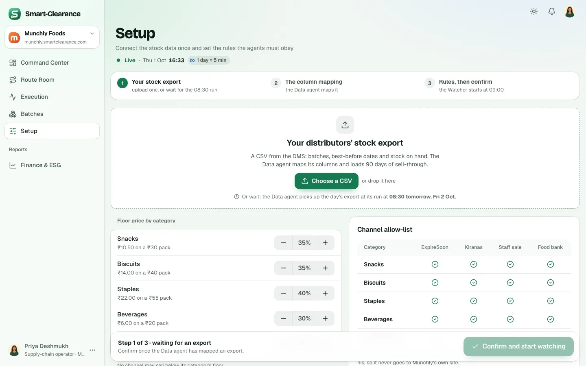
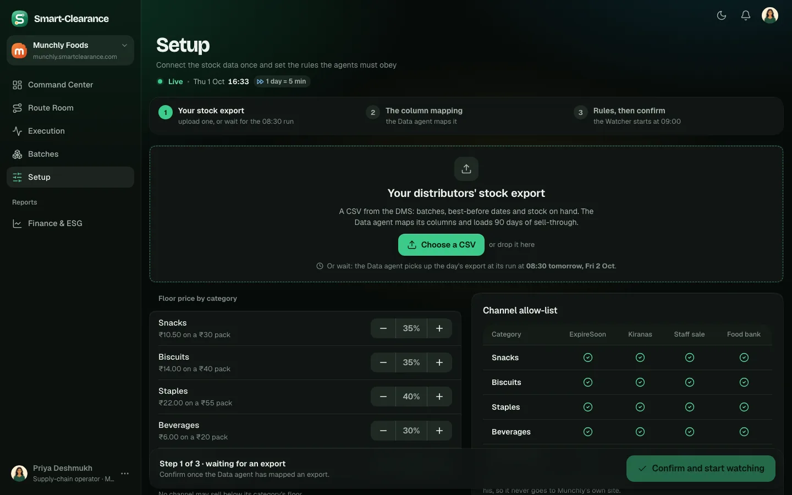
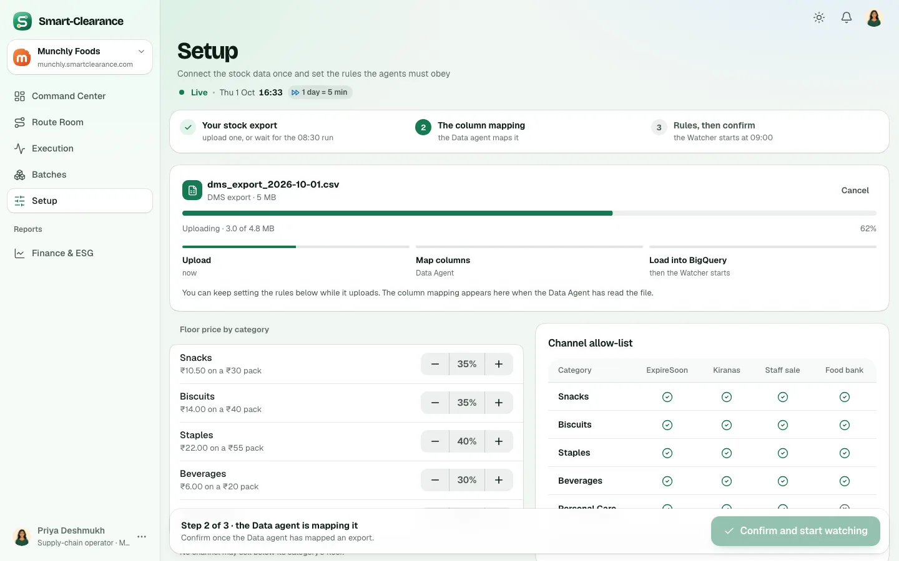
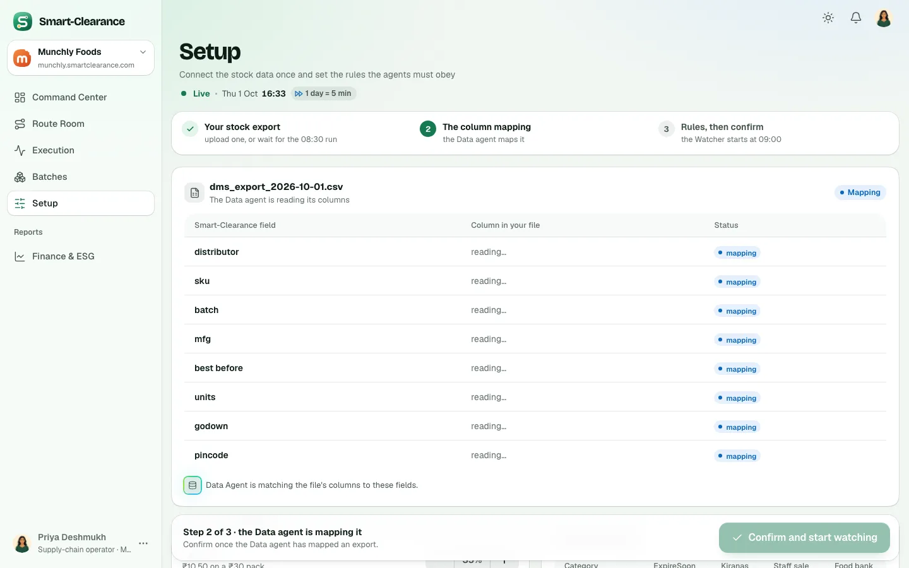
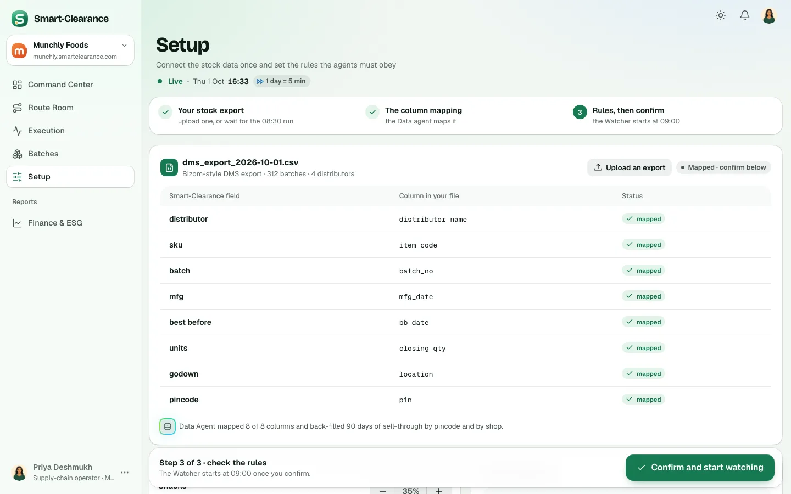
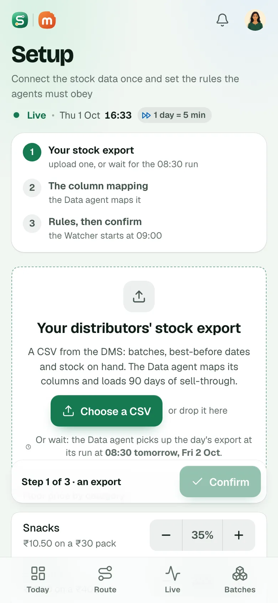
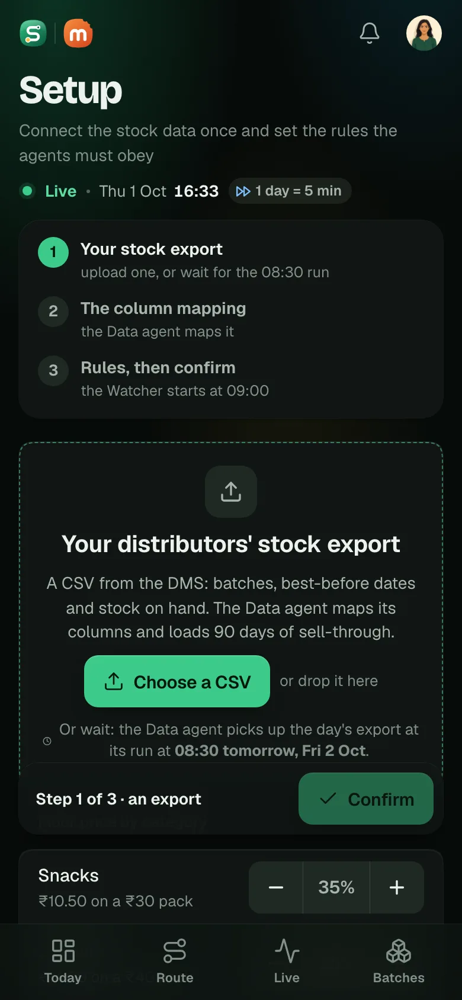
Recommended: A. It fixes what was wrong, a screen claiming a mapping it did not have, with the least change to a screen already approved: the same card says what is true at each moment, and Confirm waits with its reason. The moment is rare (a new workspace, or a reset), so it does not need its own structure; B is worth it if Setup grows more steps.